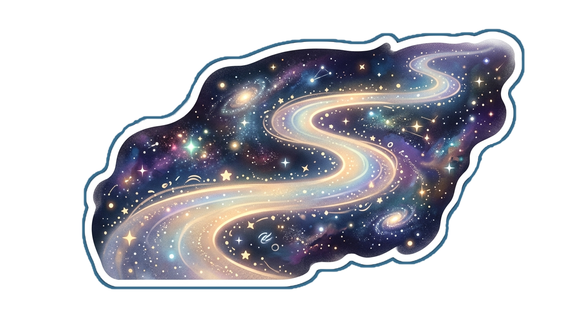
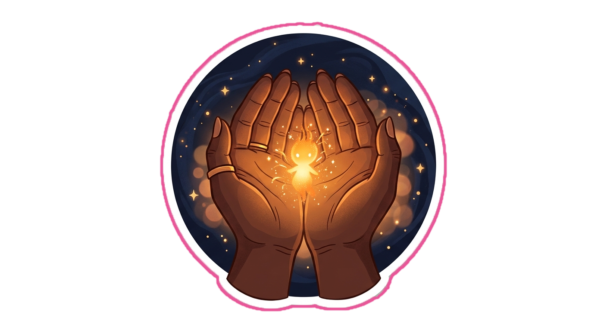

Created by Mazien
Welcome, Beautiful Soul
Some worlds are soft.
Some are electric.
Some are still waiting to be understood.
Let's bring yours to life.
You are loved here.
This is more than a questionnaire.
It's a gentle journey of self-expression,
story, and identity.
A space where you are seen,
valued, and celebrated.
Instead of pressure, there is exploration.
Instead of interrogation, there is emotional discovery.
You are not being measured here.
You are being understood.

Choose the one that feels most like home right now.
Gentle stillness, spacious thoughts, soft emotional breathing.
✓Neon pulses, intensity, movement, energetic curiosity.
✓Floating imagination, softness, emotional depth and wonder.
✓Silence, warmth, gold light, spiritual presence and reflection.
✓There is no wrong way to express yourself.
Your uniqueness matters.
Your inner world deserves to be seen.
Take your time.

Every door leads somewhere meaningful.